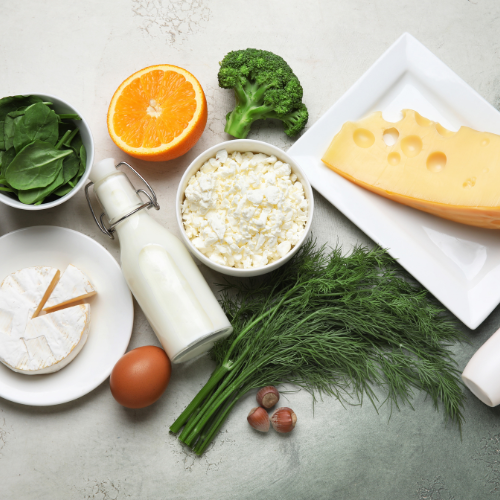
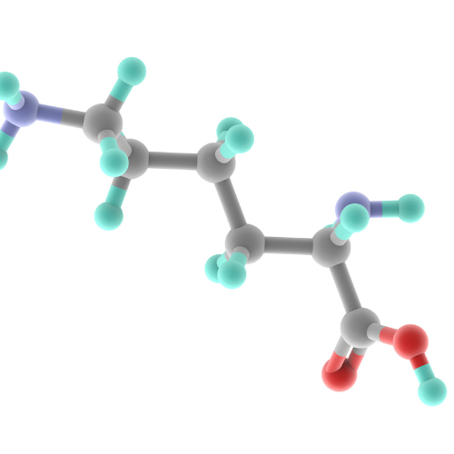

Multivitamin Supplement for Cats
Health & growth + calcium + phosphorus

Pamper your furry friend with this delectable and nutritious treat that complements their daily diet!
These treats aren’t just a delightful indulgence; they also promote your pet’s overall well-being. Packed with essential nutrients and beneficial substances, they support the optimal functioning of all bodily systems.
Ingredients: Dried food yeast, Calcium phosphates, Lactose, Dextrose, Flavorings, Taurine, Chicory root extract (inulin source), Vitamins and minerals, Antioxidant (Tocopherol Acetate).
Key Ingredients and their benefits:

Yeast
This natural food supplement is a powerhouse of vitamins (including all B vitamins, as well as D, E, and P), amino acids, macro- and micronutrients, and antioxidants. It promotes overall health, strengthens the immune system, optimizes digestion and metabolism, and even contributes to a thick, shiny coat.

Calcium
Calcium is the most abundant mineral in the body, serving as a key component in the synthesis of collagen fibers within connective tissues. Calcium salts also form the primary mineral constituents of bones and teeth. Beyond its structural role, calcium contributes to maintaining normal skin function and blood vessel elasticity.

Phosphorus
Phosphorus is a crucial element that plays a vital role in various bodily functions. It is a key component of bones, teeth, proteins, and nucleic acids, which are the building blocks of DNA and RNA. Phosphorus compounds are also essential for energy metabolism, muscular and mental activity, and overall organism maintenance. Additionally, phosphorus plays a significant role in heart and kidney function.

Lysine
Lysine is one of the essential amino acids, meaning the body cannot produce it on its own and must obtain it from food sources. It plays a crucial role in calcium and phosphorus absorption, contributing to bone health and preventing cardiovascular diseases. Lysine is also involved in oxidation-reduction reactions, which are essential for cellular processes and energy production.
By incorporating these treats into your pet’ routine, you’re not just giving them a tasty snack; you’re actively contributing to their well-being!
Feeding Guidelines:
This supplement can be given with any type of diet (raw food, dry food, etc.) and can be administered at any time, regardless of when the main meal is fed.
Recommended for a daily use throughout the year at a dosage of 5-6 tablets. If necessary, during periods of increased physical activity, stress, or recovery, the dosage can be increased by 1.5-2 times.
Storage Conditions and Shelf Life:
36 months (in original sealed packaging) · ≤75% humidity · 14°F–86°F
Net Weight: 10.5 oz (300g) · 600 tablets
Guaranteed Analysis per 1 tablet:
FOR ANIMAL USE ONLY. KEEP OUT OF REACH OF CHILDREN.
TY BY 191446436.004-2022. PRODUCT OF BELARUS.